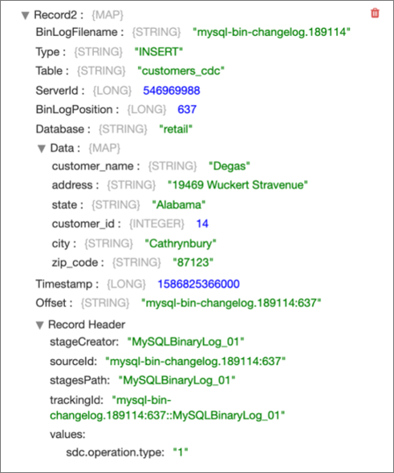

Loading Data into Databricks Delta Lake
You can use several solutions to load data into a Delta Lake table on Databricks.
Before continuing with one of the solutions, ensure that you have completed all of the required prerequisites in Databricks, including generating a personal access token, configuring and starting your Databricks cluster, and then locating the JDBC URL used to access the cluster.
- When using Amazon S3 as the staging location, see this Databricks article.
- When using Azure Data Lake Storage Gen2 as the staging location, see this Azure Databricks article.
- Bulk load data into a
Delta Lake table
Build a pipeline that reads new Salesforce data, cleans some of the input data, and then passes the data to the Databricks Delta Lake destination. The Databricks Delta Lake destination first stages the data in an Amazon S3 staging location, and then uses the COPY command to copy the data from the staging location to a Delta Lake table.
- Merge changed data into a
Delta Lake table
Build a pipeline that processes change data capture (CDC) data using the MySQL Binary Log origin and then passes the changed data to the Databricks Delta Lake destination. The Databricks Delta Lake destination first stages the changed data in an Amazon S3 staging location, and then uses the MERGE command to merge the changed data from the staging location to a Delta Lake table.
Bulk Loading Data into a Delta Lake Table
This solution describes how to build a pipeline that bulk loads Salesforce data into a Delta Lake table on Databricks.
Let's say that you want to bulk load Salesforce account data into Databricks Delta Lake for further analysis. You'd like the pipeline to clean some of the account data before loading it into Delta Lake. When the pipeline passes the cleaned data to the Databricks Delta Lake destination, the destination first stages the data in an Amazon S3 staging location, and then uses the COPY command to copy the data from the staging location to a Delta Lake table.
- Create the pipeline and configure a Salesforce origin to read account data from Salesforce.
- Configure an Expression Evaluator processor to clean the input data.
- Configure a Databricks Delta Lake destination to stage the pipeline data in text files in Amazon S3 and then copy the staged data to the target Delta Lake table.
- Run the pipeline to move the data from Salesforce to Delta Lake.
Create the Pipeline and Configure the Salesforce Origin
Create the pipeline and then configure the Salesforce origin to read account data from Salesforce.
For more detailed information about this origin, see Salesforce origin.
-
After logging into Data Collector, click the Home icon (
 ) in
the top toolbar, and then click Create New
Pipeline.
) in
the top toolbar, and then click Create New
Pipeline.
-
Click the error icon (
 ) in the empty pipeline canvas.
) in the empty pipeline canvas.
The properties panel displays the Error Records tab for the pipeline.
-
In the toolbar above the pipeline canvas, click the
Preview icon:
 .
.
When you preview the pipeline, you can verify that you correctly entered the Salesforce connection information and you can view several records of data read from Salesforce.
-
Click the Close Preview icon (
 )
to close the preview and continue building the pipeline.
)
to close the preview and continue building the pipeline.
Configure the Expression Evaluator Processor
Next you add and configure the Expression Evaluator processor to clean some of the account data.
The Type field contains either Customer - Direct or
Customer - Channel as the value. You'd like to clean this data
by keeping only Direct or Channel as the value
before loading the data into a Delta Lake table.
So you add an Expression Evaluator processor to the pipeline and define an expression
that uses the str:regExCapture() function to replace the value of
the Type field with only Direct or
Channel.
-
To verify that the expression cleans the data as expected, click the
Preview icon () and
then click Run Preview in the dialog box.
-
Click the Close Preview icon ()
to close the preview and continue configuring the next stage in the
pipeline.
Configure the Databricks Delta Lake Destination
Add and configure the Databricks Delta Lake destination to bulk load the Salesforce data into a Delta Lake table.
To bulk load data, the Databricks Delta Lake destination first stages the pipeline data in text files in Amazon S3 or Azure Data Lake Storage Gen2. Then, the destination sends the COPY command to Databricks to process the staged files.
For more detailed information about this destination, see Databricks Delta Lake destination.
-
Leave the default values for the remaining properties.
The Staging tab should be configured as follows:

Run the Pipeline
Run the pipeline to move the data from Salesforce to Delta Lake.
Merging Changed Data into a Delta Lake Table
This solution describes how to design a pipeline that reads change data capture (CDC) data from a database and replicates the changes to a Delta Lake table on Databricks.
Let's say that you want to track customer transactions in a MySQL table and apply those changes to a Delta Lake table for further analysis. That is, you need to apply the same set of updates, deletes, and inserts made to the MySQL table to the Delta Lake table. You first design and run a pipeline to bulk load the initial set of transactions in the MySQL table into the Delta Lake table. Then you design the CDC pipeline that processes subsequent changes.
In the CDC pipeline, you use a MySQL Binary Log origin to capture the changes from the MySQL master database. Due to the structure of the MySQL binary log records, you need to add processors to the pipeline to restructure the record and keep only the necessary fields. When the pipeline passes the data to the Databricks Delta Lake destination, the destination first stages the changed data in an Amazon S3 staging location, and then uses the MERGE command to merge the changed data from the staging location to a Delta Lake table.
- Create the pipeline and configure a MySQL Binary Log origin to read CDC information provided by MySQL in binary logs.
- Configure several processors to restructure the record based on the type of operation performed: INSERT, UPDATE, or DELETE.
- Configure a Databricks Delta Lake destination to stage the changed data in text files in Amazon S3 and then merge the staged data to the target Delta Lake table.
- Run the pipeline to replicate data from MySQL binary logs to the Delta Lake target table.
Create the Pipeline and Configure the MySQL Binary Log Origin
Create the pipeline and then configure the MySQL Binary Log origin to read CDC information provided by MySQL in binary logs.
-
After logging into Data Collector, click the Home icon () in
the top toolbar, and then click Create New
Pipeline.
-
Click the error icon () in the empty pipeline canvas.
The properties panel displays the Error Records tab for the pipeline.
-
In the toolbar above the pipeline canvas, click the
Preview icon: .
When you preview the pipeline, you can verify that you correctly entered the MySQL connection information, and you can view several records of data read from the binary logs.
-
Click the Close Preview icon ()
to close the preview and continue building the pipeline.
Configure Processors to Restructure the Record
Due to the structure of the MySQL binary log records, you need to add several processors to the pipeline to restructure the record and keep only the necessary fields.
Each record generated by the MySQL Binary Log origin includes the following information:
- CRUD operation type in the
Typefield: INSERT, UPDATE, or DELETE. - Change data capture information such as the table, server ID, and timestamp in various fields.
-
New data to be inserted or updated in the
Datamap field. - Old data to be deleted in the
OldDatamap field.
For example, the origin might generate the following record for data that needs to be inserted:

You need to restructure the records differently, based on the operation type. You add
a Stream Selector processor to the pipeline to route records with a DELETE operation
in the Type field to one processing stream and to route records
with an INSERT or UPDATE operation in the Type field to another
processing stream. Then for each stream, you add a Field Remover processor to keep
only the necessary fields and a Field Flattener processor to flatten the fields in
the Data or OldData map fields.
-
Click the Add icon (
 ) to add a condition.
) to add a condition.
-
To verify that you've restructured the data as expected, click the
Preview icon () and
then click Confirm in the dialog box.
-
Click the Close Preview icon ()
to close the preview and continue configuring the next stage in the
pipeline.
Configure the Databricks Delta Lake Destination
Add and configure the Databricks Delta Lake destination to merge the changed data to a Delta Lake table.
To merge changed data, the Databricks Delta Lake destination first stages the pipeline data in text files in Amazon S3 or Azure Data Lake Storage Gen2. Then, the destination runs the COPY command to load the data to a temporary Delta Lake table, and then finally runs a MERGE command that uses the temporary table to merge the changed data into the target Delta Lake table.
For more detailed information about this destination, see Databricks Delta Lake destination.
Run the Pipeline
Run the pipeline to move the changed data from MySQL binary logs to Delta Lake.
-
Click the Stop icon (
 ) to
stop the pipeline.
) to
stop the pipeline.